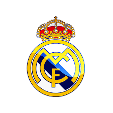

ჩემი საყვრელი სპორტი ფეხბურტთა
.jfif)
ფეხბურთს მე ბავშვობიდან ვთამაშობ და რეალ მადრიდს ვგულშემატკივრობ ასევე რონალდოს და საქართველოს ნაკრებს და მე ამ სამივეზე მოგიმაზადეთ ინფორმაცია
კრიშტიანუ რონალდუ დუშ სანტუშ ავეირუ (პორტ. Cristiano Ronaldo dos Santos Aveiro; დ. 5 თებერვალი, 1985) — პორტუგალიელი ფეხბურთელი, თავდამსხმელი. პორტუგალიის ეროვნული ნაკრების კაპიტანი. 2023 წლის 1 იანვრიდან იცავს ერ-რიადის საფეხბურთო კლუბ „ალ-ნასრის“ ღირსებას. პორტუგალიის ეროვნული ნაკრების, „რეალ მადრიდისა“ და ზოგადად, ეროვნულ ნაკრებთა ისტორიაში ყველა დროის საუკეთესო ბომბარდირი. საყოველთაოდ აღიარებულია ყველა დროის ერთ-ერთ უდიდეს ფეხბურთელად. პორტუგალიის ფეხბურთის ფედერაციის მიერ აღიარებულია პორტუგალიის ყველა დროის საუკეთესო ფეხბურთელად. პირველი ფეხბურთელი ისტორიაში, რომელმაც ინგლისის პრემიერლიგის, ესპანეთის პრიმერა დივიზიონისა და იტალიის სერია A-ს ჩეპიონის ტიტულის მოპოვება შეძლო. მრავალჯერ იყო აღიარებული აღნიშნული ჩემპიონატების სეზონის საუკეთესო ფეხბურთელად და ბომბარდირად. მოგებული აქვს 2016 წლის ევროპის ჩემპიონატი, ჩემპიონთა ლიგა 5-ჯერ (2007–08, 2013–14, 2015–16, 2016–17, 2017–18), ერთა ლიგა (2018-19) და ოქროს ბურთი 5-ჯერ (2008, 2013, 2014, 2016, 2017).
.jfif)
.jfif)
საფეხბურთო კლუბი რეალ მადრიდი (ესპ. Real Madrid Club de Fútbol, სიტყვასიტყვით: მადრიდის სამეფო საფეხბურთო კლუბი), ცნობილი, როგორც მადრიდის რეალი ან უბრალოდ რეალი — ესპანური საფეხბურთო კლუბი ქალაქ მადრიდიდან.
„რეალი“ არის ყველაზე წარმატებული კლუბი ესპანეთში და ფიფა-ს მიერ დასახელებულ იქნა მე-20 საუკუნის საუკეთესო კლუბად. კლუბს მოგებული აქვს პრიმერა დივიზიონის სარეკორდო 36 ტიტული; ესპანეთის თასის 20 ტიტული; ესპანეთის სუპერთასის 10 ტიტული; ჩემპიონთა ლიგის სარეკორდო, 15 ტიტული, მათ შორის 3-ჯერ ზედიზედ (ჩემპიონატის მიმდინარე ფორმატის პირობებში) 2016–18 წლებში, რაც ყველა სხვა კლუბისთვის ჯერჯერობით მიუღწეველი შედეგია; უეფა-ს თასის 2 ტიტული; უეფა-ს სუპერთასის 5 ტიტული და საკონტინენტთაშორისო თასის 4 ტიტული. „რეალი“ იყო ფიფა-ს და ახლა გაუქმებულ G-14-ის დამაარსებელი. სიტყვა „რეალი“ ესპანურად „სამეფოს“ ნიშნავს და კლუბს იგი ალფონსო XIII-მ მიანიჭა 1920 წელს, ემბლემაზე გამოსახულ გვირგვინთან ერთად. ეს გვირგვინი სხვა ესპანურ კლუბებსაც მიუღიათ („რეალ სოსიედადი“, „რეალ უნიონი“, „რეალ ბეტისი“ და „რეალ სარაგოსა“).
„რეალი“ 1902 წელს დაარსდა და ესპანეთის უმაღლესი დივიზიონიდან არასდროს გავარდნილა. 1950-იანებში კლუბმა თავი ევროპულ და ესპანურ ფეხბურთში მთავარ ძალად დაიმკვიდრა. 1980-იანებში კლუბს ევროპასა და მსოფლიოში ერთ-ერთი საუკეთესო შემადგენლობა ჰყავდა (ცნობილი, როგორც La Quinta del Buitre), მოიგო რა 2 უეფა-ს თასი; 5 ესპანეთის ჩემპიონატი (ზედიზედ); 1 ესპანეთის თასი და 3 ესპანეთის სუპერთასი.
გუნდის ტრადიციული ფორმა თეთრი ფერისაა, თუმცა, ხანდახან, ლურჯიც აქვს შერეული. კლუბის გერბი რამდენიმეჯერ შეიცვალა. ახლანდელი გერბი 1920-იანების გერბის ადაპტაციაა. „რეალის“ საშინაო არენა 80 354-ადგილიანი „სანტიაგო ბერნაბეუ“ არის, რომელიც მადრიდის ცენტრში მდებარეობს და კლუბის მთავარი არენაა 1947 წლიდან. ბერნაბეუ ჩემპიონთა ლიგის ფინალების სტადიონი იყო 1957, 1969, 1980 და 2010 წლებში.

საქართველოს ეროვნული საფეხბურთო ნაკრები — წარმოადგენს საქართველოს საერთაშორისო ტურნირებზე და შეხვედრებზე ფეხბურთში. ნაკრების კონტროლს და ხელმძღვანელობას ახორციელებს საქართველოს ფეხბურთის ფედერაცია, რომელიც ფიფას და უეფას წევრია 1992 წლიდან. საშინაო შეხვედრებს თბილისში, ბორის პაიჭაძის ეროვნული სტადიონზე მასპინძლობს. საქართველოს ეროვნული ნაკრების საუკეთესო შედეგებია 1996 წლის ევროპის ჩემპიონატისა და 2002 წლის მსოფლიო ჩემპიონატის საკვალიფიკაციო ეტაპზე დაკავებული მესამე ადგილები. ასევე, 2018–19 უეფას ერთა ლიგის მეოთხე D დივიზიონის პირველ ჯგუფში და 2022–23 უეფას ერთა ლიგის მესამე C დივიზიონის მეოთხე ჯგუფში დაკავებული პირველი ადგილები, რამაც ნაკრებს უეფას ევრო 2020-ის და ევრო 2024-ის შესარჩევი პლეი-ოფის საგზურები მოუპოვა. 2024 წლის 4 აპრილის მდგომარეობით, საქართველოს ეროვნული ნაკრები ფიფას რეიტინგში 75-ე ადგილზეა.[3][4]
.jfif)